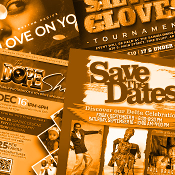

Graphic Design
I have expertise in Adobe Creative Suite (Photoshop, Illustrator, InDesign) for branding, UI/UX, and print media. Focus on typography, color theory, and layout optimization.

Creative. System Builder. Solution Provider
I'm Jonathan Daniel, a passionate all around creative dedicated to creating hi-quality, personalized digital experiences. Let's dive into my work and see if I can help you!
I bring more than 20 years of experience with an array of creative skills geared toward artistic expression, quality visual and audio experiences, and world-building. I do more than provide one-off services. I help individuals, businesses, and organizations tell their story.
Well versed in a unique set of skills, centering on immersive visuals and asset creation.
I have expertise in Adobe Creative Suite (Photoshop, Illustrator, InDesign) for branding, UI/UX, and print media. Focus on typography, color theory, and layout optimization.

I also have extensive experience working with digital audio workstations, such as Ableton Live and FL Studio. Mixing, and mastering services are available.
I am proficient in 2D animation tools, such as After Effects, and Character Animator for motion graphics, educational videos, and character animation.